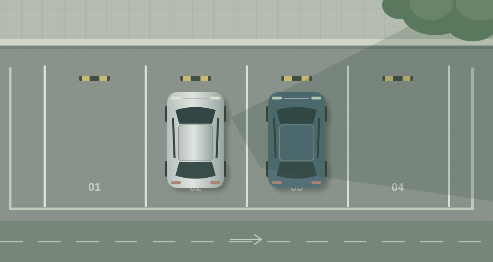

문제해결과인공지능 · PARKING AI
주차 현황.
한 장의 사진으로, 네 칸의 빈자리를 한눈에.
주차 가능한 빈자리
2/ 4칸
A1, A4에서 주차할 수 있어요
사용 중
1칸
차량이 있는 것으로 분류된 자리
확인 필요
1칸
빈자리 수에 포함하지 않아요
분석 상태 AI
시연 데이터
실제 분석은 모델 연결 후 가능
주차장 이미지 A 구역
예시 이미지 · 고정된 시연 결과

SAMPLE VIEW
A ZONE / 01
JPG, PNG, WebP 사진을 여기에 끌어다 놓아도 돼요. 최대 20 MB
칸별 분석 결과
확인 필요인 자리는 현장에서 한 번 더 확인해주세요.